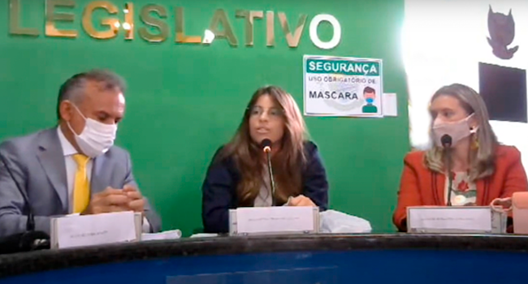
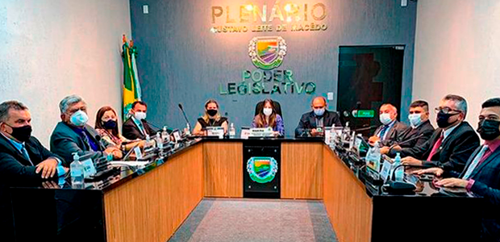
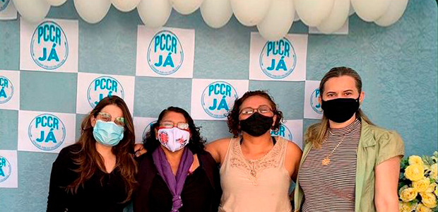
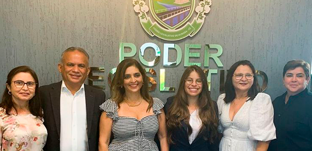

1.001 VOTOS
A MULHER MAIS BEM VOTADA!

Momentos
-

Eleições da Mesa Diretora
Em janeiro de 2021 Marina Leite foi Eleita presidente da Câmara Municipal de Aurora.
Ver mais -

Reinalguração do Plenário Municipal
Plenário municipal reformado para o melhor acolhimento dos legisladores e da população.
Ver mais -

Audiência Pública - PCCR
Audiência Pública do Os Plano de Cargos, Carreiras e Remuneração dos Servidores Públicos.
Ver mais -

Moção de Aplausos à Fauldade Santa Maria
Sessão Solene de entrega da Moção de Aplausos à direção da faculdade Santa Maria
Ver mais